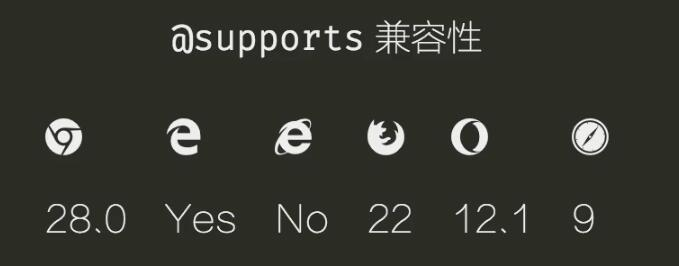

CSS中的兼容性问题
- 浏览器不支持该特性
- 某些特定条件下触发浏览器
bug
浏览器特性支持
你需要兼容哪些浏览器
- 根据用户群体决定
- 面向普通用户：IE8+、Chrome、Firefox
- 企业级产品：IE9+、Chrome、Firefox
- 了解浏览器市场份额
- 日志分析
- 百度统计、NetMarketShare
浏览器不支持时怎么办？
- 如果低版本浏览器没有这个特性可以接受吗？
- border-radius不支持时，没有圆角
- box-shadow不支持时，没有阴影
- 可以使用效果稍微差一点的替代方案吗？
min-height:100vh用min-height:800px代替
- 可以使用一些替代方案吗？
opacity:0.5在IE下用filter:alpha(opacity=50)
- 可以使用JavaScript让浏览器支持吗？
- 使用
html5shim.js让IE6～8支持新标签 - 使用
DD_belatePNG.js让IE6只吃半透明png图片
- 使用
- 更换实现方式
不同浏览器使用不同的样式
@supports

1 | .contrainer{ |
浏览器hack原理-层叠
同一个属性，后面书写的值覆盖前面书写的值
1
2line-height:2;
line-height:3;对当前浏览器来说无效的属性和属性值会被忽略1
2
3
4p{
display:table;
display:flex;
}
浏览器hack原理- 条件注释
1 | <!-- [if IE 7] > |
浏览器怪癖
iE6
- IE 6 不支持两个或多个类选择器直接组合，只会解析最后一个。
- 只有iE6会忽略
_1
2
3
4
5
6
7
8
9/* ie6不支持两个或多个类选择器直接组合 */
.unsed-class.selector{
/* iE6 only css */
}
.container{
height:100px;
/* 只有iE6会忽略_ ,认为是height*/
_height:200px;
}
iE7
- 只有IE6 和7 会忽略
*1
2
3
4
5.container{
height:100px;
/* 只有IE6 和7 会忽略* */
*height:200px;
}
- 只有IE6 和7 会忽略
ie8
- IE6-8不支持
:root选择器 - IE6-8 会忽略
\9 :root选择器相当于html1
2
3
4
5
6
7
8
9/* IE6-8不支持 `:root`选择器 */
:root .selector{
/* ie6-8 style */
}
.selector{
color:#fff;
/* ie6-8 会忽略\9 */
color:#fff\9;
}
- IE6-8不支持
小测试：
1 | .top{ |
css2选择器的兼容性（IE6-7）
IE6不支持多个类直接组合
p.class-a.class-b被当作p.class-b- 解决方法：处理好选择器优先级
IE 6 不支持父子选择器和兄弟选择器
E> F、E+F和E~F选择器无效- 解决办法：避免使用，用后代选择器替代
IE 6 不支持属性选择器
- 任何一种都不支持
- 解决办法：用
class选择器替代
IE 6-7 不支持某些伪元素
- 不支持
:before和:after - 解决办法：改变实现方式、或在HTML中添加标签
IE 6 不支持某些伪类
- 非链接不能使用
:hover,:active - 解决办法：使用
a嵌套需要hover的元素
IE6-7不支持：:focus伪类
- 解决办法：使用
javascript
IE 6 不支持first-child伪类
- 解决办法：给第一个元素添加
class="first"
IE6不支持min/max-width/height
min-height解决办法
1
2
3
4div{
min-height:500px;
_height:500px;
}max-width解决办法
1
2
3
4
5
6
7
8
9
10
11
12
13
14
15<div>
<div class="strut"></div>
<!-- other content -->
</div>
<style>
.container{
min-width:500px;
}
/* IE6 */
.container .strut{
height:1px;
width:500px;
}
</style>max-width/height解决办法
- 使用javascript
iE6不支持position:fixed
1 | html,body{ |
ie6-7不支持块级元素inline-block
- 行级元素支持,而块级元素不支持
- 解决办法
1
2
3
4
5
6.selector{
display:inline-block;
*display:inline;
/* BFC可以设置上下padding和margin,width,height,块级盒子拥有的属性*/
*zoom:1;
}
ie6-7 不支持display:table
- 请使用
float或者inline-block布局 - 不要使用
table布局
CSS3 选择器兼容性
- CSS3中的大部分选择器，兼容性是
IE 9+ - 例如：:target, :empty, :nth-child, :nth-of-type, :checked, :disabled 无法在
IE6-8用 - 移动端支持绝大多数CSS3选择器
iE8
- box-sizing
- outline
ie8 不支持
- background-size
- 推荐在IE8及以下使用固定宽度布局
- border-radius
- box-shadow
- opacity
- filter:alpha(opacity=50)
- rgba、hsl、hlsa
- 一般场景下，使用相近的不透明颜色代替
- Alpha可以通过增加额外元素，并设置透明度实现
- rem/vh/vw/calc
- 降级为固定宽度
ie9
transition与animation
- 可以接受的降级
- 实在不能使用就用Javascript
media query
- 基本的媒体(all/print/screen/speech)都支持
- 媒体特性（width/height/orientation、、、）IE9及其以上
- 还是建议
IE8及其以下使用固定宽度
- 还是建议
浏览器前缀
- 浏览器厂商为了实验新特性,在属性名前加前缀
- Chrome/Safari/Opera：
-webkit- - Microsoft：
-ms- - Mozilla/Firefox：
-moz-
注意：前缀
语义化的HTML5标签
1 | <!--[if lte IE 8]> |
html5shiv.js
1 | (function(){ |
浏览器BUG
IE6下半透明png显示不正确
- [DD_belatedPNG.js](http://www.dillerdesign.com/experiment/DD_roundies/)
- filter
1 | .select{ |
IE6浮动双边距
浮动元素的与浮动同方向的边距加倍
1
2
3
4
5.selector{
float:left;
/* IE6下显示20px */
margin-left:10px;
}解决办法
1
2
3
4
5.selector{
float:left;
margin-left:10px;
_display:inline;
}
hasLayout
- On Having Layout
zoom:1
IE 模式
- 浏览器模式 Browser Mode
- 切换渲染引擎、JavaScript引擎和HTTP请求的UserAgent
兼容模式相当于使用IE7的引擎- 对于IE浏览器可以用F12切换浏览器模式
- 文档模式
- 切换文档模式，即渲染引擎和JavaScript引擎
- 浏览器模式指定之后，会自动切换文档模式
控制IE模式（<=10）
DocType有无控制是否进入怪异模式meta标签控制进入哪种文档模式1
2
3
4
5<!--使用IE7模式渲染-->
<meta http-equiv="x-ua-compatible" content="IE=7">
<!--使用最新引擎-->
<meta http-equiv="x-ua-compatible" content="IE=edge">
<title>控制IE模式</title>
测试兼容性
- 虚拟机
- BrowserStack
Polyfill
- 使用代码帮助浏览器实现它尚未支持的特性
- 使用（未来）标准写法
- css Polyfills